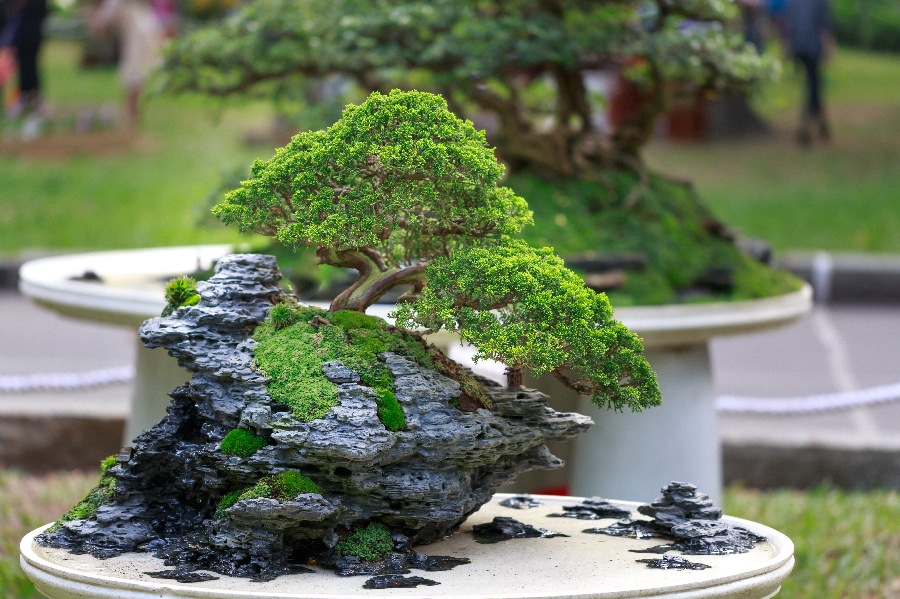

Plantas para Decoração
A ideia é trazer a natureza para dentro de casa e ter um ambiente mais acolhedor. O uso de plantas na decoração é uma tendência que veio para ficar. Pesquisas mostram que o jeito de morar do futuro vai privilegiar a natureza e o bem estar. Por isso, nada mais indicado do que usar o verde para complementar a decoração.
Existem diversos tipos de plantas usadas para decoração, algumas até adaptadas para lugares pequenos como é o caso dos bonsais. O aperfeiçoamento do uso de plantas na decoração vem a muito sendo explorado e ainda existem muitas possibilidades a serem exploradas.
Vejamos alguns exemplos de plantas usadas em decorações:
Bonsai
O Bonsai não se trata de uma espécie vegetal específica, mas sim de uma técnica utilizada em árvores com o objetivo de “miniaturizá-la” inspirando-se em formas existentes na natureza. Não há árvore de Bonsai, mas árvores que se transformam pelo processo de Bonsai. Na prática, é a arte de selecionar e transformar árvores que tenham potencial para se assemelhar a uma réplica na natureza.
Um bonsai precisa ter outros atributos além de simplesmente estar plantado num vaso raso e pequeno. A planta deve ser uma réplica de uma árvore da natureza em miniatura. Deve simular os padrões de crescimento e os efeitos da gravidade sobre os galhos, além das marcas do tempo e estrutura geral dos galhos. Essencialmente é uma obra de arte reproduzida por meio de cuidados especializados.
Através da observação percebe-se que as árvores têm tendências de comportamento e estilos próprios. Também encontramos uma classificação de estilos de bonsai e formas mais tradicionais baseada no estilo natural das árvores. Suas principais categorias se baseiam principalmente nas formas e no número total de árvores na composição.
Rosa do Deserto
Adenium obesum é cultivada como uma planta doméstica e decorativa em regiões temperadas. A Rosa do Deserto ou Adenium deve ser regada, mas não deve ser mantida em terra ou substratos encharcados e se faz altamente recomendável o uso de substratos de alto poder de drenagem, como por exemplo, substrato de fundo de rio, a Rosa do deserto deve ser cultivada em vasos e ambientes ensolarados com temperatura mínima de 10 graus.
A Rosa do deserto tem plantios semelhantes aos cactos e como o próprio nome sugere se adapta muito bem a exposições a climas de baixa umidade. Numerosos híbridos foram desenvolvidos, são plantas apreciadas por suas flores coloridas e cáudices grossos e incomuns. Podem ser cultivados por muitos anos em um vaso e são comumente usados para bonsai. Porque as plantas cultivadas por sementes não são geneticamente idênticas à planta mãe, as variedades desejáveis são comumente propagadas por enxertia.
As plantas geneticamente idênticas também podem ser propagadas por corte. No entanto, as plantas cultivadas por corte tendem a não desenvolver o caudex espesso desejável tão rapidamente quanto as plantas obtidas das sementes.
A seiva do Adenium boehmianum, A. multiflorum e do A. obesum contém glicosídeo cardíaco tóxico e é usado como veneno para as flechas em toda a África para caçar grandes animais.

Suculentas
As plantas suculentas são aquelas que possuem raiz, o talo ou as folhas engrossados para permitir o armazenamento de água em quantidades muito maiores que nas plantas normais. Esta adaptação lhes permite manter reservas do líquido durante períodos prolongados, e sobreviver em ambientes áridos e secos que para as outras plantas seriam inabitáveis.
O exemplo mais típico de suculência é a dos cactos, cujos talos apresentam uma grossa capa de tecido parenquimatoso. Além dos cactos outras diversas famílias vegetais apresentam os mesmos fenômenos.
A adaptação das suculentas lhes permite colonizar ambientes pouco habitados, que recebem pouca competição por parte de outras espécies e, nos quais os herbívoros são escassos. Para possibilitar a captação da escassa umidade presente no ambiente, muitas suculentas são pubescentes, ou seja, apresentam uma superfície coberta de pelos que retém o orvalho matutino. Outras técnicas empregadas para maximizar a retenção da umidade é a redução da superfície em comparação com o volume da planta, limitando o número de ramificações e o comprimento das mesmas e, o desenvolvimento de camadas de cera na superfície das folhas e talos. Desta maneira reduzem o processo de perda de água por evaporação.
Os cactos apresentam uma adaptação desconhecida nas demais plantas suculentas. Estes transformam as folhas em espinhos que cumprem a dupla função de reter a água e defender a planta de possíveis agressões. A fotossíntese ocorre na própria superfície do talo que armazena o líquido retido.
Sua forma de propagação vegetativa se dá pela simples queda da folha na superfície do solo. A água contida da folha é suficiente para hidratar as raízes e a formação da muda até a maturidade do crescimento. Quando têm suas folhas retiradas, é possível plantá-las no solo, e novas plantas se originam de cada folha. Esse processo se chama estaquia.
Existem milhares de espécies de plantas suculentas, classificadas em várias famílias. A maioria pertence as aizoáceas, as cactáceas e as crassuláceas, com mais de mil espécies cada uma.